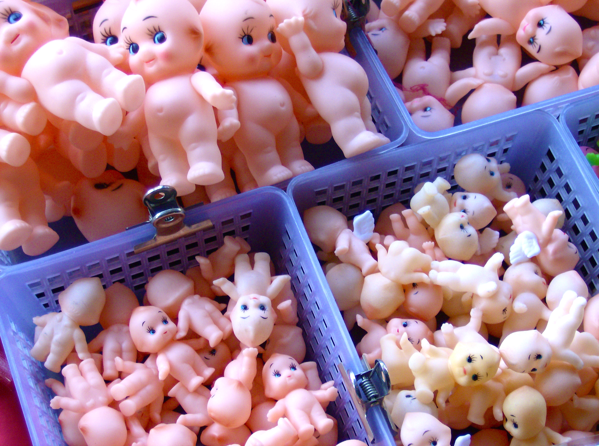
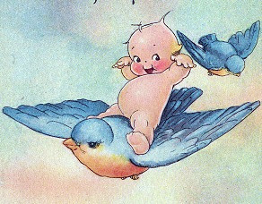
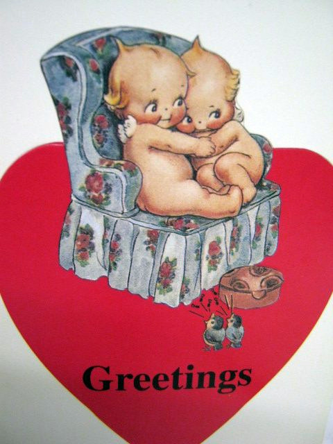
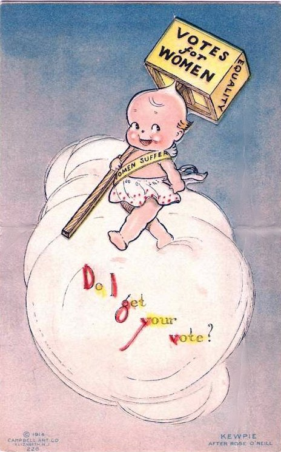
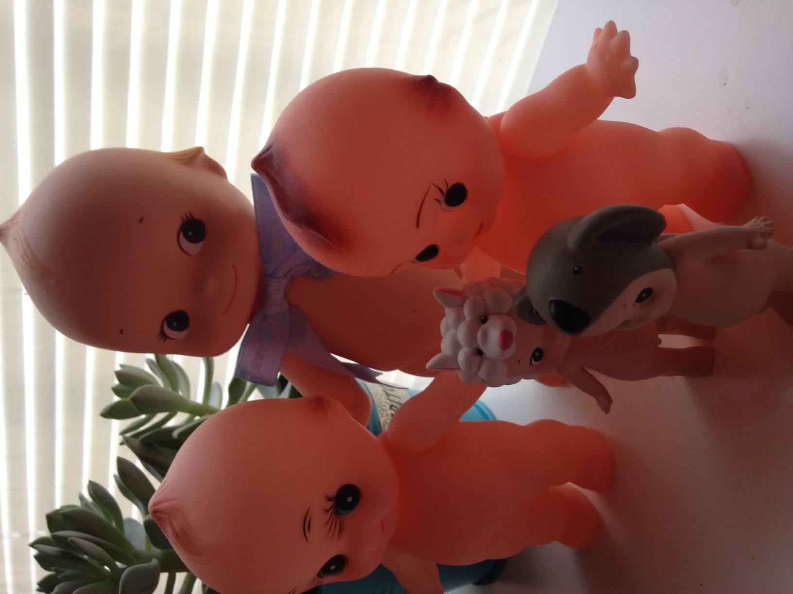
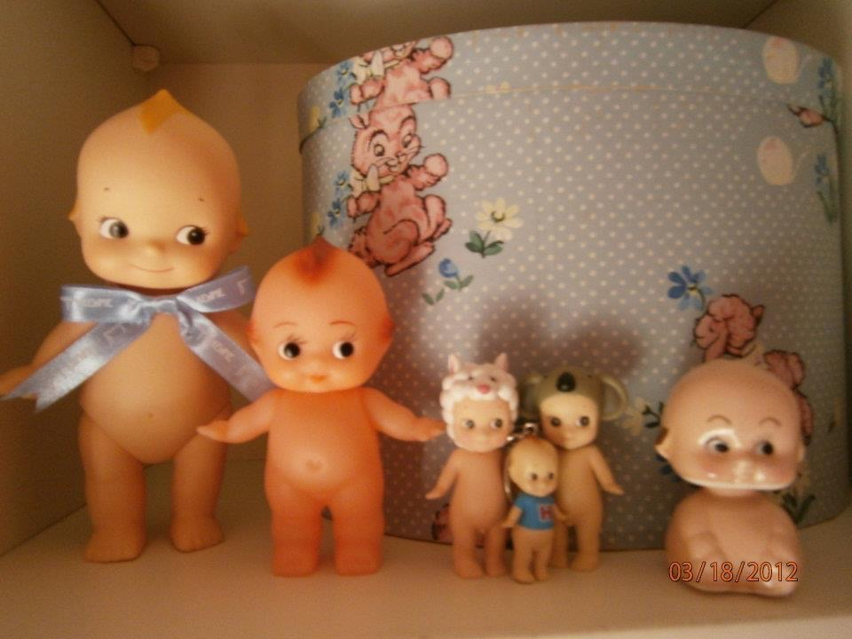

The world of Kewpie dolls is one of wonder and imagination. Kewpie is a character created by famed American illustrator Rose O’Neill in 1909 and they were first featured as illustrations in the magazine Ladies’ Home Journal. O’Neill was the first woman in the United States to create comic strips. The Kewpie figure was depicted among her other original creations in these comic strips. The Kewpie was named after the Roman god of love, Cupid, and they become very popular. The illustrations then led to the creation of Kewpie dolls, which were first made from bisque and then later celluloid. The company Effanbee produced the first hard plastic Kewpie doll. There have also been Kewpie dolls made from softer rubber and vinyl.
Other than dolls, there have been:
Rose O’Neill was also an avid woman’s suffrage activist and she illustrated Kewpie dolls fighting for the Nineteenth Amendment to the Constitution, offering an unexpected side of Kewpies advocating for modern change. And during the production of Kewpie dolls, O’Neill fought for the dolls to be affordable for all children no matter their economic status. As the highest paid female illustrator in the U.S., O’Neill continued to fight for feminist politics and activism until her retirement and death. Coupled with the societal impact of Rose O’Neill’s unprecedented activism and affinity for social change through adorable figures such as Kewpie dolls, the Kewpie doll branding brings about many different connotations for collectors and new fans worldwide.
      TikTok about Kewpie Dolls